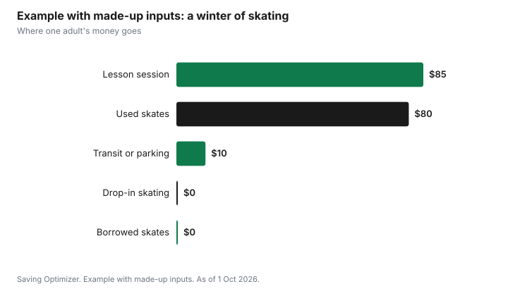

Sports · Canada
Public Skating and Adult Lessons: A Canadian Cost Guide
Public skating is one of the cheapest winter activities for adults in Canada. Toronto says all of its drop-in skating programs are free with no reservation needed, and it runs more than 50 outdoor rink locations in a typical season. Toronto also offers a free Skate Lending Library at select locations, so you can borrow skates and a helmet before buying. The main cost is lessons: Toronto runs registered Learn to Skate programs for adults 19 and older and older adults 60 and older, at Beginner and Advanced levels. Check your own city's recreation guide for fees and dates, since programs and prices vary.
Key takeaways
- Toronto: all drop-in skating programs are free, no reservation needed.
- Toronto outdoor artificial rinks typically open in late November and close in March.
- Borrow skates and helmets free from Toronto's Skate Lending Library at select locations.
- Toronto adult Learn to Skate: Beginner and Advanced; CSA-approved hockey helmet required.
- Toronto charges a $14.13 admin fee on withdrawals and a $54.90 surcharge per activity for non-residents.
- Example with made-up inputs: a winter of drop-in skating and one lesson session costs $175.
Free rinks
Most Canadian cities run drop-in skating at arenas and outdoor rinks. Toronto's drop-in skating page says all drop-in programs are free and no reservations are needed, and that schedules and hours vary. Outdoor artificial ice rinks typically open in late November and close in March, and most indoor arenas open for fall and winter and close in late March to late April. After a heavy snowfall, outdoor rinks close for cleanup, and crews reopen them as soon as they can.
| Item | What the page says |
|---|---|
| Cost | All drop-in programs are free |
| Reservations | Not needed |
| Outdoor season | Typically late November to March |
| Indoor arenas | Most close late March to late April |
| Locations | More than 50 outdoor rinks in a typical season |
| Snow | Outdoor rinks close after heavy snowfall for cleanup |
In Ottawa, the National Capital Commission says the Rideau Canal Skateway is 7.8 km long and free to use, and that its season usually runs from January to early March, depending on the weather. For more free winter ideas, see free holiday entertainment.
Schedules
Drop-in sessions are split by activity. Toronto's page lists leisure skating, figure skating, shinny hockey, ringette and long blade speed skating, with some sessions set aside by age. Leisure skates are the general public sessions most adults want. Check the schedule for your rink before going, since times change through the season and around holidays.
- Leisure skate: general public skating for all ages.
- Shinny: informal hockey, often split by age group, with its own helmet rule.
- Figure skating: sessions for practising figure skating skills.
- Long blade speed skating: Toronto's page says this is for 18 and older and requires long blade skates.
Making outdoor skating comfortable
Outdoor rinks are free, but cold and wind can cut a session short. Dress in layers, wear a warm hat under or instead of a helmet liner, and bring a thermos. Arrive dressed to skate, since Toronto's page encourages participants to arrive fully dressed even though change rooms and lockers are available at most locations. Weekday evenings and early mornings are often quieter than weekend afternoons, which matters for a beginner who wants room to practise. Check your rink's status online before leaving, because outdoor rinks can close for snow clearing or mild weather.
Rentals and helmets
Toronto's page says skate rentals are available at Nathan Phillips Square during the winter season only. Through a partnership with Desjardins, the city also offers a free Skate Lending Library at select locations, where you can borrow skates, helmets and skating aids with no reservation. The NCC lists skate rentals and sharpening among Skateway services.
Helmet rules depend on the activity and age. On Toronto's drop-in helmet table, a helmet is required for leisure skating at six and under and recommended at seven and older, and shinny has its own requirement. For registered lessons the rule is stricter: Toronto requires a CSA-approved hockey helmet for all participants in all levels of learn to skate, hockey, figure skate and power skate programs. If you need to buy skates, see buying and sharpening skates.
Lessons
Toronto's Learn to Skate program for youth (13 to 18), adults (19 and older) and older adults (60 and older) has two levels. Beginner has no prerequisite and covers balance, posture, forward and backward skating and stopping. Advanced follows Beginner and introduces edges, turns, crossovers and parallel stopping. Required equipment is hockey or figure skates, warm gloves, a winter coat and snow pants or water-resistant pants, plus the helmet.
| Level | Prerequisite | Covers |
|---|---|---|
| Beginner | None | Balance, posture, forward and backward skating, stopping |
| Advanced | Beginner or equal ability | Edges, turns, crossovers, slalom, parallel stopping, backward circle thrusts |
| Figure Skating | Learn to Skate 4 or equal ability | Spins, jumps, footwork; not a beginner program |
Private skating clubs also run adult programs, and some offer adult CanSkate sessions. Club fees and schedules vary; check the club's own page. Lessons are the main expense of learning to skate, so compare a city session against a club program by the cost per hour on the ice.
Registration fees to know
Toronto's registration page lists a few rules worth knowing before you sign up. Registration opens at 7 a.m. on most start dates, and at 10 a.m. for older adult programs. Programs that cost more than $100 can be paid in two installments. Withdrawals and refunds carry a $14.13 administration fee per person, per activity, and transfers after the second class carry the same fee. Non-Toronto residents pay a surcharge of $54.90 for each activity, including otherwise free activities. The Welcome Policy subsidy can help eligible low-income residents pay for programs.
| Rule | Amount or detail |
|---|---|
| Registration opens | 7 a.m. on most start dates; 10 a.m. for older adult programs |
| Installments | Programs over $100 can be paid in two installments |
| Withdrawal or refund fee | $14.13 per person, per activity |
| Transfer after second class | $14.13 |
| Non-resident surcharge | $54.90 per activity |
| Subsidy | Welcome Policy for eligible residents |
Example with made-up inputs: a winter of skating
These numbers are an example with made-up inputs. They are not Toronto or club fees. An adult borrows skates from a lending program for two free sessions, then buys a used pair for $80. They take one adult beginner lesson session at $85 and skate free at drop-in sessions ten times. Transit or parking costs $10 over the winter for the rinks that are not walkable.
| Item | Cost |
|---|---|
| Borrowed skates, 2 sessions | $0 |
| Used skates | $80 |
| Adult lesson session | $85 |
| Drop-in skating, 10 times | $0 |
| Transit or parking | $10 |
| Total | $175 |

Plan
- Find your city's drop-in skating page and the nearest rinks.
- Check the helmet rule for the session you want.
- Borrow or rent skates for your first sessions.
- Note the registration start date for adult lessons and sign up early.
- Check admin and non-resident fees before registering.
- Skate often at free drop-in sessions between lessons.
Sources
- City of Toronto, Drop-in Skating, toronto.ca, as of 1 Oct 2026. Free drop-in programs, rink seasons, more than 50 outdoor rinks, rentals, Skate Lending Library, helmet table.
- City of Toronto, Skating, Figure Skating and Hockey Lessons, toronto.ca, as of 1 Oct 2026. Adult Learn to Skate levels, equipment and helmet requirement.
- City of Toronto, How to Register for Recreation Programs, toronto.ca, as of 1 Oct 2026. Registration times, installments, $14.13 administration fee, $54.90 non-resident surcharge, Welcome Policy.
- National Capital Commission, Rideau Canal Skateway, ncc-ccn.gc.ca, as of 1 Oct 2026. Length, free use, typical season and services.
- The lesson, skate and travel costs in the example are an example with made-up inputs.
Frequently asked questions
Is public skating free in Toronto?
Yes. Toronto's drop-in skating page says all drop-in programs are free and no reservations are needed. Schedules and hours vary by location.
When do Toronto outdoor rinks open?
Toronto says outdoor artificial ice rinks typically open in late November and close for the season in March, and they close after heavy snowfall for cleanup.
Can I borrow skates for free?
In Toronto, yes. The city's Skate Lending Library at select locations lends skates, helmets and skating aids free, with no reservation.
Do adults need a helmet for skating lessons in Toronto?
Yes. Toronto requires a CSA-approved hockey helmet for all participants in all levels of learn to skate programs.
What fees apply to Toronto recreation programs?
Toronto charges a $14.13 administration fee per person, per activity on withdrawals and refunds, and non-residents pay a $54.90 surcharge per activity. Programs over $100 can be paid in two installments.
Researched and drafted with AI assistance and fact-checked against official Canadian sources. How we create content.
Disclosure: Saving Optimizer has no affiliate relationship with any city, rink or skating club named here. Education only.